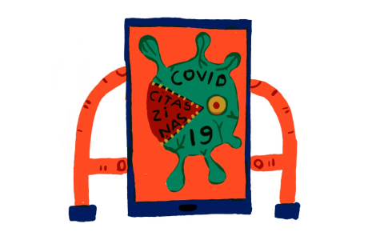

Uzņēmīgā Zanda Švēde mūziku sāka mācīties tikai 25 gadu
vecumā, nokļuva Sanfrancisko operā un nu jau otro sezonu ir
Frankfurtes operas soliste. Kad vien apstākļi ļauj, viņa
uzstājas Rīgā.
Laura Dumbere
{{>bookmark}}
{{>card tag="Komentārs" title="Dziedātāja Zanda Švēde iekaro
Sanfrancisko" excerpt="Šonedēļ starptautiskā Finanšu darījumu darba
grupa (FATF) vērtē, cik sekmīgi Latvija apkaro naudas atmazgāšanu. Kas
paveikts, lai neiekļūtu neuzticamo valstu pelēkajā sarakstā?"
author="Laura Dumbere"}} {{>card tag="Komentārs" excerpt="Šonedēļ
starptautiskā Finanšu darījumu darba grupa (FATF) vērtē, cik sekmīgi
Latvija apkaro naudas atmazgāšanu.." title="Galvenā naudas atmazg
lkewnkl lkwleknw en kefkeljh" author="Indra Sprance"}}
Karikatūra

Corona Kandinsky vienā vai divās rindās
Ernests Kļaviņš
{{>card-horizontal tag="Komentārs" title="Dace Rēķe, instagramā māca
latviešu valodu" excerpt="Šonedēļ starptautiskā Finanšu darījumu
darba grupa (FATF) vērtē, cik sekmīgi Latvija apkaro naudas
atmazgāšanu. Kas paveikts, lai neiekļūtu neuzticamo valstu pelēkajā
sarakstā?" author="Laura Dumbere"}} {{>card-horizontal
tag="Komentārs" title="Dace Rēķe, instagramā māca latviešu valodu"
excerpt="Šonedēļ starptautiskā Finanšu darījumu darba grupa (FATF)
vērtē, cik sekmīgi Latvija apkaro naudas atmazgāšanu. Kas paveikts,
lai neiekļūtu neuzticamo valstu pelēkajā sarakstā?" author="Laura
Dumbere"}} {{>card-horizontal tag="Komentārs" title="Dace Rēķe,
instagramā māca latviešu valodu" excerpt="Šonedēļ starptautiskā
Finanšu darījumu darba grupa (FATF) vērtē, cik sekmīgi Latvija
apkaro naudas atmazgāšanu. Kas paveikts, lai neiekļūtu neuzticamo
valstu pelēkajā sarakstā?" author="Laura Dumbere"}}
{{>card-horizontal tag="Komentārs" title="Dace Rēķe, instagramā māca
latviešu valodu" excerpt="Šonedēļ starptautiskā Finanšu darījumu
darba grupa (FATF) vērtē, cik sekmīgi Latvija apkaro naudas
atmazgāšanu. Kas paveikts, lai neiekļūtu neuzticamo valstu pelēkajā
sarakstā?" author="Laura Dumbere"}}
Reklāma
Koncerts
Grupa Jumprava. XO Arēnā Rīga
28. novembris
Koncerts
Rīgas Gredzens VEF Kultūras pilī
28. novembris
{{>card-horizontal tag="Komentārs" title="Dace Rēķe, instagramā māca
latviešu valodu" excerpt="Šonedēļ starptautiskā Finanšu darījumu
darba grupa (FATF) vērtē, cik sekmīgi Latvija apkaro naudas
atmazgāšanu. Kas paveikts, lai neiekļūtu neuzticamo valstu pelēkajā
sarakstā?" author="Laura Dumbere"}} {{>card-horizontal
tag="Komentārs" title="Dace Rēķe, instagramā māca latviešu valodu"
excerpt="Šonedēļ starptautiskā Finanšu darījumu darba grupa (FATF)
vērtē, cik sekmīgi Latvija apkaro naudas atmazgāšanu. Kas paveikts,
lai neiekļūtu neuzticamo valstu pelēkajā sarakstā?" author="Laura
Dumbere"}} {{>card-horizontal tag="Komentārs" title="Dace Rēķe,
instagramā māca latviešu valodu" excerpt="Šonedēļ starptautiskā
Finanšu darījumu darba grupa (FATF) vērtē, cik sekmīgi Latvija
apkaro naudas atmazgāšanu. Kas paveikts, lai neiekļūtu neuzticamo
valstu pelēkajā sarakstā?" author="Laura Dumbere"}}
{{>card-horizontal tag="Komentārs" title="Dace Rēķe, instagramā māca
latviešu valodu" excerpt="Šonedēļ starptautiskā Finanšu darījumu
darba grupa (FATF) vērtē, cik sekmīgi Latvija apkaro naudas
atmazgāšanu. Kas paveikts, lai neiekļūtu neuzticamo valstu pelēkajā
sarakstā?" author="Laura Dumbere"}}